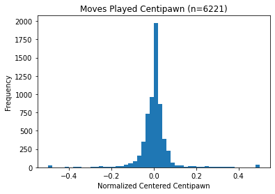
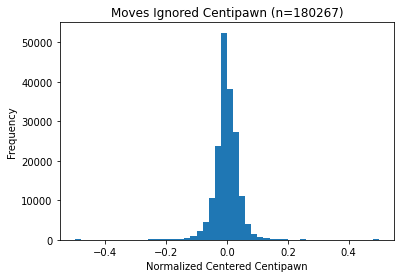

Chess Compress
ChessCompress is a custom chess compression algorithm that uses a chess engine combined with a neural network to achieve near state of the art compression results.
PGN Chess Format
For simplicity, I'm adding an example of a PGN-encoded chess game that'll make reading the rest of the page easier. I've dropped the headers for simplicity.
1. d4 Nf6 2. Nc3 d5 3. Nf3 e6 4. Bg5 c5 5. e3 Nc6 6. Bb5 a6 7. Bd3 Nb4 8. a3 Nxd3+ 9. Qxd3 c4 10. Qe2 Bd7 11. b3 cxb3 12. cxb3 Rc8 13. Na2 Bxa3 14. O-O O-O 15. Ne5 Bb5 16. Nd3 h6 17. Bf4 e5 18. Bxe5 Qb6 19. Nc3 Rxc3 20. Rxa3 Bxd3 21. Qd2 Ne4 22. Qxc3 Nxc3 23. Rc1 Qb4 24. Raa1 Ne2+ 25. Kf1 Nxc1+ 26. Kg1 Qe1# 0-1
You can see how each move affects the state of the board by looking at this chess game: https://lichess.org/mzewWRQh/black.
Current State of the Art
The current state of the art claims to achieve 4.4 bits/move of compression over the entire Lichess dataset. For some context, here are the other methods' efficacy.

Source: https://lichess.org/blog/Wqa7GiAAAOIpBLoY/developer-update-275-improved-game-compression
They achieve this by using huffman codes and a quick set of ordering rules that attempt to rank each move by likeliness of being played.
Note: I have been unable to reproduce the results that the current state of the art got. Additionally, the state of the art statistics were trained on the dataset it was validated on – this is not good practice.
Huffman Codes
Huffman codes are a very common compression technique. The general idea is to assign lower length bitstrings to the most frequent characters or string of characters.
For example, let's say that we're encoding the first move in chess. Here is a rough estimate of the frequency distribution of the first move.
| Move | Prob. | Bitstring |
|---|---|---|
| e4 | .33 | 0 |
| d4 | .22 | 10 |
| c4 | .11 | 110 |
| f4 | .05 | 111 |
| ... | ... | ... |
As you can see, the bitstring gets longer and longer the more unlikely a particular move is. In this case, it would take only 1 bit to encode the most common move, e4.
The problem with this is that there is no difference between e4 having a probability of .33 or .23. This leads to inefficiencies when encoding since if the first few moves all have similar probabilities, there is no way to account for that in the encoding.
Adaptive Arithmetic Coding
Adaptive Arithmetic codes are a more rare compression technique which I used to squeeze out some more performance from my prediction stats. Essentially, after determining the probability distribution of the next move, you generate a table like this
Move 1:
| Move | Prob. | Space Allocated |
|---|---|---|
| e4 | .33 | .33 |
| d4 | .22 | .33-.55 |
| c4 | .11 | .55-.66 |
| f4 | .05 | .66-.71 |
| ... | ... | ... |
Then, suppose white moves e4 - the next distribution table will look something like this:
| Move | Prob. | Space Allocated | Game Encoding |
|---|---|---|---|
| e5 | .33 | .33 | 0 - 0.11 |
| d5 | .22 | .33-.55 | 0.11 - 0.1826 |
| ... | ... | ... | ... |
Let's suppose that black's response is e5. This means that we can encode our sequence of moves as some number between 0 and 0.11, the rough probability of the first move multiplied by the second move. This would continue until the game is over and we have a very specific decimal range in the range between 0 and 1. A number within this range can be very efficiently encoded in binary by finding a fraction in the range with a power of 2 in the denominator.
A visual example from Wikipedia encoding "WIKI" can be helpful:

This method reduces the inefficiencies in huffman codes and is what I implemented. This provides context – if there are multiple equally likely moves, this is reflected in the encoding.
Methodology
So, beating the state of the art now appears fairly simple. Simply moving towards an adaptive arithmetic coding scheme should, in theory, result in compression gains. The only problem that needed to be solved was generating an accurate probability distribution.
A UCI (Universal Chess Interface) compliant chess engine reports on the strength of a position by denoting it in centipawn values. A centipawn is 1/100th of a pawn's worth. Intially, I tried to graph the centipawn distribution of the moves that everybody took and tried to estimate probabilities from there. However, over a large enough sample size, people's performances were about average, which made this approach not useful. A simple naive ordering using Stockfish, one of the best chess engines, gave me approximately 5.0 bits/move.


There is a negligible difference between these two graphs.
This is something now that can be turned in to a classification problem. If fed into a properly trained neural network, the neural network can smartly determine the probability distribution of each move. Even better, this takes very little modification to a normal classification network.
After trying to use my mac to do thousands of iterations on the chess data, I opted to do some preprocessing on my mac and do most of the compute-intensive tasks on Google Colab. The custom collab notebook used to train the network is here:
https://colab.research.google.com/drive/1-0tk8ETe9Zuj3LIGa3hy6Fgq8uqhU50z
The structure of the optimized neural network is as follows:
model = keras.Sequential([
keras.layers.Dense(65, activation='relu'),
# keras.layers.Dense(64, activation='tanh'),
keras.layers.Dropout(0.5),
keras.layers.Dense(64//2),
keras.layers.Dense(65)
])
The model does look slightly overfit on an approx. 18000 training data input size, which was partly fixed by adding a dropout. Using this neural network, the compression results significantly improved to approximately 4.6 bits/move.
Challenges
- gathering enough data quickly (processing with stockfish and using
python-chesswas extremely slow – I had to make some modifications to the library to speed things up) - prevent the neural network from overfitting
- figuring out how to optimize and do a parameter search (by hand)
Example
Chess game (2496 bits):
1. d4 Nf6 2. Nc3 d5 3. Nf3 e6 4. Bg5 c5 5. e3 Nc6 6. Bb5 a6 7. Bd3 Nb4 8. a3 Nxd3+ 9. Qxd3 c4 10. Qe2 Bd7 11. b3 cxb3 12. cxb3 Rc8 13. Na2 Bxa3 14. O-O O-O 15. Ne5 Bb5 16. Nd3 h6 17. Bf4 e5 18. Bxe5 Qb6 19. Nc3 Rxc3 20. Rxa3 Bxd3 21. Qd2 Ne4 22. Qxc3 Nxc3 23. Rc1 Qb4 24. Raa1 Ne2+ 25. Kf1 Nxc1+ 26. Kg1 Qe1# 0-1
Compressed format (240 bits):
0100101110010111101000001100011011101100110100011110110100001101
1110101010111100011110100011000001011101010011001000110110001010
1101111000110110011110001101011001100001111110110100011111101011
010100101011100001011011001010101011010110100111
Compression ratio: 90.3%!